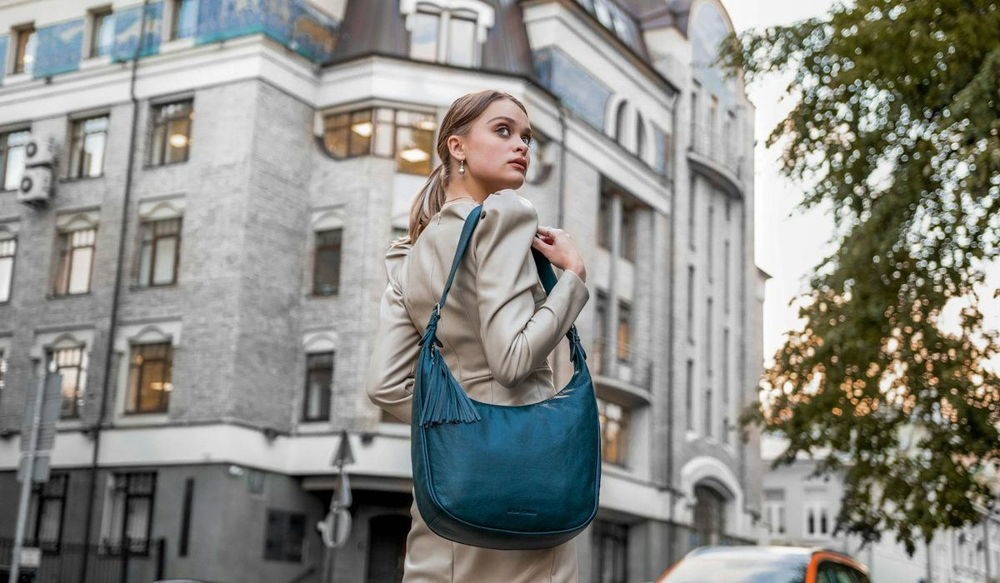
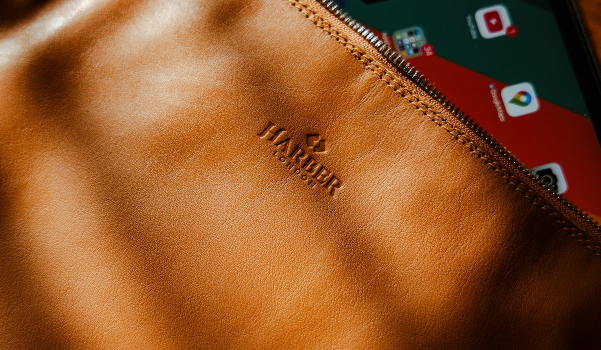

En bref
Le meilleur sac porté épaule pour femme en 2026 est le Grand sac hobo Jess de Vanessa Bruno, en cuir velours fabriqué en Italie, noté 8,6/10 (relevé de démonstration) pour le confort à l'épaule et la contenance. Le Numéro Un de Polène suit à 8,3/10 et reste le plus polyvalent du bureau au dîner. Longchamp complète le podium à 8,1/10 avec le Pliage Xtra en cuir à 360 €, le prix le plus doux des trois.
- Neuf modèles en cuir comparés, du sac Swing de ba&sh dès 350 € au Sac Neige d'A.P.C. jusqu'à 490 €
- Le Grand sac hobo Jess de Vanessa Bruno coûte 450 €, 495 € en coloris noisette, et 395 € en petit modèle
- Le Pliage Xtra porté épaule M de Longchamp, à 360 €, coûte 90 € de moins que le Jess
- Le Numéro Un de Polène, en cuir grainé, coûte 420 €
- Sur nos neuf modèles, deux affichent un pays de fabrication ou un lieu d'atelier
Sommaire de ce comparatif
Nos critères et leur poids
Un portefeuille, un téléphone, des clés, des lunettes de soleil, une gourde de 50 cl, un livre de poche et un pull fin roulé. C'est le contenu que nous avons glissé dans chacun des neuf sacs, porté une semaine entière, du métro au déjeuner et jusqu'au dîner. Un sac porté épaule se juge là, au bout de la quatrième heure, quand la sangle commence à glisser ou à scier.
| Critère | Poids | Ce que nous regardons |
|---|---|---|
| Confort à l'épaule | 25 % | Largeur et souplesse de l'anse, tenue sur l'épaule, poids à vide |
| Matière et finitions | 25 % | Qualité du cuir, coutures, tranches, doublure, quincaillerie |
| Prix | 20 % | Prix catalogue du modèle testé, rapport entre matière et prix |
| Contenance | 15 % | Ce qui entre sans forcer, accès au fond du sac |
| Polyvalence | 15 % | Passage du jour au soir, du jean au tailleur, nombre de coloris |
La note globale est la moyenne pondérée des cinq sous-notes, arrondie au dixième.
Le confort et la matière pèsent la moitié de la note. C'est un choix assumé. Un beau cuir qui fait mal à l'épaule ne sort plus du placard au bout d'un mois.
Le classement des sacs porté épaule
01 Le plus confortable à l'épauleJess grand modèle, 450 €8,6/10
Le plus confortable à l'épauleJess grand modèle, 450 €8,6/10
Le plus confortable à l'épauleJess grand modèle, 450 €8,6/1002 Le plus polyvalentNuméro Un, 420 €8,3/10
Le plus polyvalentNuméro Un, 420 €8,3/10
Le plus polyvalentNuméro Un, 420 €8,3/1003 Le meilleur prix du podiumLe Pliage Xtra M, 360 €8,1/10
Le meilleur prix du podiumLe Pliage Xtra M, 360 €8,1/10
Le meilleur prix du podiumLe Pliage Xtra M, 360 €8,1/10Le Grand sac hobo Jess de Vanessa Bruno prend la première place. C'est le seul vrai hobo du podium, une forme en demi-lune qui se pose contre la hanche et suit le corps au lieu de le heurter. Le cuir velours de vachette, fabriqué en Italie, reste souple dès le premier jour, et l'anse ne glisse pas sur un manteau en laine. Notre contenu de test entre sans forcer, pull compris. Il coûte 450 €, 495 € en coloris noisette, et le petit modèle à 395 € garde la même ligne pour un usage plus léger.
Le Numéro Un de Polène suit à 8,3/10. Plus structuré, en cuir grainé, il tient sa forme posé sur une table de restaurant et passe d'un tailleur à un jean sans changer de registre. C'est le modèle le plus polyvalent du panel. Polène perd des points sur la contenance, notre pull n'y entre pas avec la gourde.
Longchamp complète le podium avec le Pliage Xtra porté épaule M, en cuir de vachette, à 360 €. Il reprend en cuir la silhouette du Pliage, se porte facilement et coûte 90 € de moins que le Jess. Pour qui veut monter en gamme chez Longchamp, le Roseau porté épaule M en cuir atteint 690 €.
Le tableau comparatif des 9 modèles
Une ligne par modèle, au prix catalogue relevé sur le site officiel. Pour Sézane, dont le site n'a pas pu être consulté, le prix est un ordre de grandeur du marché et aucun modèle n'est nommé.
| Marque et modèle | Note /10 | Prix | Matière | Fabrication | Le point fort |
|---|---|---|---|---|---|
| Vanessa Bruno, Grand sac hobo Jess en cuir veloursNotre choix | 8,6 | 450 € | Cuir velours de vachette | Italie | Le confort d'un vrai hobo |
| Polène, Numéro Un | 8,3 | 420 € | Cuir grainé | Ubrique (Espagne) mis en avant | Le plus polyvalent |
| Longchamp, Le Pliage Xtra porté épaule M | 8,1 | 360 € | Cuir de vachette | Non affichée | Le prix le plus doux du podium |
| Sézane, sac porté épaule en cuir | 7,8 | Environ 300 à 400 € | Cuir | Non affichée | Le style du quotidien |
| Le Tanneur, Juliette moyen modèle | 7,6 | 450 € | Cuir grainé | Non affichée | La rigueur du maroquinier |
| A.P.C., Sac Neige | 7,5 | 450 à 490 € | Cuir d'une seule pièce | Non affichée | La coupe la plus graphique |
| Maje, Sac Miss M en cuir lisse | 7,0 | 375 € | Cuir lisse | Non affichée | Le cuir lisse du quotidien |
| Sandro, Le Mambo en cuir lisse | 6,9 | 385 € | Cuir lisse | Non affichée | Les versions en suède |
| ba&sh, sac Swing | 6,8 | 350 à 425 € | Cuir, suède à franges selon version | Non affichée | Le prix d'entrée le plus bas |
Prix catalogue relevés sur les sites officiels en France, hors ventes Archives. Prix de Sézane indicatif, la collection change à chaque saison. Notes et prix, relevé de démonstration du 11 octobre 2026.

| Modèle | Confort | Matière | Prix | Contenance | Polyvalence |
|---|---|---|---|---|---|
| Vanessa Bruno, Jess | 9,2 | 8,9 | 7,4 | 9,0 | 8,2 |
| Polène, Numéro Un | 8,2 | 8,8 | 7,8 | 7,6 | 8,9 |
| Longchamp, Le Pliage Xtra | 8,0 | 7,9 | 8,6 | 7,8 | 8,3 |
| Le Tanneur, Juliette | 7,8 | 8,3 | 6,9 | 7,6 | 7,2 |
Sous-notes sur 10 des quatre premiers modèles vérifiés, pondérées selon le tableau des critères.
Le Jess perd deux colonnes. Sur le prix, il est battu par Longchamp, 8,6 contre 7,4, et par trois autres modèles du panel affichés sous 400 €, le Swing de ba&sh, le Miss M de Maje et Le Mambo de Sandro. Sur la polyvalence, le Numéro Un de Polène le devance, 8,9 contre 8,2, parce qu'un hobo souple reste une allure décontractée qui se marie moins bien avec un tailleur strict. Sa première place tient au confort et à la contenance.
Derrière le podium, les écarts se resserrent. Le sac porté épaule de Sézane, 7,8/10, se place quatrième sur le style et les services, avec un prix que nous estimons entre 300 et 400 € faute d'avoir pu consulter le site. Le Juliette du Tanneur, 7,6/10, offre le cuir grainé le plus rigoureux après celui de Polène, mais coûte autant que le Jess pour une contenance moindre. Le Sac Neige d'A.P.C., 7,5/10, séduit par sa coupe et reste le plus cher du tableau.
Le trio de fin de tableau, Maje, Sandro et ba&sh, partage une même logique. Ce sont des maisons de prêt-à-porter dont les sacs accompagnent une silhouette, à des prix plus accessibles que ceux des maroquiniers, de 350 à 425 €. Le Miss M de Maje et Le Mambo de Sandro en cuir lisse sont plus compacts, et notre pull roulé n'y entre pas. Le Swing de ba&sh vaut surtout pour ses versions en suède à franges, très marquées.
Hobo, structuré ou compact, quelle forme pour quel usage
Le mot porté épaule recouvre trois familles. Elles ne servent pas la même journée.
- Le hobo, souple et en demi-lune, comme le Jess de Vanessa Bruno, épouse le corps et avale un pull, mais s'affaisse quand il est vide.
- Le sac structuré, comme le Numéro Un de Polène ou le Sac Neige d'A.P.C., tient sa ligne posé sur une table et protège mieux un contenu fragile.
- Le format compact, comme le Miss M de Maje ou Le Mambo de Sandro, suffit pour un dîner mais pas pour une journée complète.
Chez Vanessa Bruno, deux alternatives au Jess méritent un regard. Le Moon Slim en cuir, à 395 €, reprend le fermoir doré de la ligne Moon sur une silhouette plus fine, et se garde pour les journées légères. Le Lune, en cuir de vachette légèrement grainé, nubuck ou effet vintage, coûte 455 € en petit et 495 € en grand, avec une allure plus construite que le Jess.
Un mot sur le cuir velours, la matière du Jess. C'est un cuir dont la surface a été poncée pour obtenir ce toucher doux et mat, qui accroche la lumière autrement qu'un cuir lisse. Il marque moins les rayures du quotidien, mais il craint la pluie battante et se brosse plutôt qu'il ne se cire. Une bombe imperméabilisante passée avant le premier hiver suffit à le protéger. Le cuir lisse du Jess, autre version proposée par la maison, se patine plus vite et pardonne mieux une averse. Le cuir grainé du Numéro Un de Polène reste le plus tolérant des trois, ce qui explique en partie sa bonne note de polyvalence. Le choix tient à votre trajet. Si vous marchez beaucoup sous la pluie, préférez le lisse ou le grainé.
« Mon sac de tous les jours doit tenir un pull et une gourde. Sinon je finis avec un tote en toile en plus, et je ne ressemble plus à rien. » Une lectrice, 36 ans, Lille.
Combien mettre dans un sac porté épaule en cuir
Dans ce panel, l'écart de prix reste court, de 350 à 490 €. Le cuir porté épaule premium français se joue dans une bande de 140 €, et la différence se fait sur la matière et la façon plus que sur l'étiquette.
| Budget | Modèles du panel | Ce que vous obtenez |
|---|---|---|
| De 350 à 400 € | ba&sh Swing, Longchamp Le Pliage Xtra, Maje Miss M, Sandro Le Mambo, Vanessa Bruno Moon Slim | Un premier sac en cuir, souvent plus compact |
| De 400 à 460 € | Polène Numéro Un, Vanessa Bruno Jess, Le Tanneur Juliette, Vanessa Bruno petit Lune | Les cuirs les plus soignés et les meilleures contenances |
| Plus de 460 € | A.P.C. Sac Neige, Vanessa Bruno grand Lune, Longchamp Le Roseau | Des lignes signées, des cuirs travaillés en une pièce ou en version luxe |
Prix catalogue relevés sur les sites officiels le 11 octobre 2026.

Le Juliette du Tanneur, à 450 €, coûte le même prix que le Jess pour un cuir grainé plus rigide et une allure plus classique. L'A.P.C. Sac Neige, cousu dans une seule pièce de cuir, monte jusqu'à 490 € et reste le plus graphique du panel. Polène se place juste en dessous de la médiane, à 420 €.
Un repère d'usage pour trancher. Un sac porté épaule en cuir sort cinq jours sur sept pendant au moins trois ans s'il est bien choisi, soit plus de sept cents sorties. À 450 €, le Jess revient à environ 60 centimes la sortie. Le calcul vaut pour tous les modèles du panel, et il change la façon de regarder les 90 € d'écart avec Longchamp. Polène, à 420 €, tient le même raisonnement sur un cuir plus structuré, qui marque moins vite aux coins.
Quel sac porté épaule choisir selon votre journée
Pour une journée complète avec un pull et une gourde
Le Jess de Vanessa Bruno en grand modèle, à 450 €. C'est le plus confortable et le plus logeable du panel, et son anse reste en place sur un manteau.
Pour passer du bureau au dîner
Le Numéro Un de Polène, à 420 €. Sa forme structurée tient sur une table et se porte aussi bien avec un tailleur qu'avec un jean.
Pour un budget sous 400 €
Le Pliage Xtra de Longchamp à 360 €, ou le Swing de ba&sh dès 350 €. Le premier pour la discrétion, le second pour les versions en suède à franges.
Pour une silhouette graphique
Le Sac Neige d'A.P.C., de 450 à 490 €. Une seule pièce de cuir, peu de couture, une ligne nette qui se remarque.
Notre verdict
Sur notre relevé d'octobre 2026, le Grand sac hobo Jess de Vanessa Bruno est le meilleur sac porté épaule pour femme avec 8,6/10. Il gagne sur le confort et la contenance grâce à sa forme hobo et à son cuir velours italien, et perd sur le prix et la polyvalence. Polène suit à 0,3 point, Longchamp à 0,5.
Si votre priorité est la polyvalence, prenez le Numéro Un de Polène. Si votre priorité est le prix, prenez le Pliage Xtra de Longchamp à 360 €. Si vous voulez la même maison que le Jess sur une ligne plus fine, prenez le Moon Slim à 395 €.
Questions fréquentes
Quel est le meilleur sac porté épaule pour femme en 2026 ?
Le Grand sac hobo Jess de Vanessa Bruno, en cuir velours fabriqué en Italie à 450 €, arrive en tête de notre classement avec 8,6/10. Le Numéro Un de Polène suit à 8,3/10 et le Pliage Xtra de Longchamp à 8,1/10.
Combien coûte un sac porté épaule en cuir de qualité ?
Dans notre panel de neuf modèles, un sac porté épaule en cuir coûte de 350 € pour le Swing de ba&sh à 490 € pour le Sac Neige d'A.P.C. Le Jess de Vanessa Bruno coûte 450 €, le Numéro Un de Polène 420 € et le Pliage Xtra de Longchamp 360 €.
Est-ce qu'un sac hobo est pratique au quotidien ?
Un hobo comme le Jess de Vanessa Bruno épouse le corps et avale un pull, une gourde et un livre sans forcer, ce qui en fait le plus confortable de notre test. Il s'affaisse quand il est vide et se marie moins bien qu'un sac structuré avec un tailleur strict.
Quelle différence entre le Jess et le Moon de Vanessa Bruno ?
Le Jess est un hobo souple en cuir velours ou cuir lisse, à 395 € en petit et 450 € en grand. Le Moon, en cuir craquelé avec fermoir doré fabriqué en Italie, a une ligne plus construite, et le Moon Slim en cuir coûte 395 €.
Est-ce que le Pliage en cuir de Longchamp vaut le coup ?
Le Pliage Xtra porté épaule M de Longchamp, en cuir de vachette, coûte 360 € et obtient 8,1/10 dans notre classement. C'est la meilleure sous-note prix du podium, 8,6/10, pour une contenance un peu inférieure à celle du Jess de Vanessa Bruno.
Comment sont notés les modèles de ce classement ?
Chaque sac est noté sur cinq critères, le confort à l'épaule (25 %), la matière et les finitions (25 %), le prix (20 %), la contenance (15 %) et la polyvalence (15 %). La note globale est la moyenne pondérée de ces sous-notes, et notes et prix proviennent d'un relevé de démonstration du 11 octobre 2026.
Notre méthode
Ce classement repose sur des relevés faits sur les sites officiels et en boutique, refaits chaque mois.
- Les prix sont relevés sur les sites officiels des marques en France, hors soldes et hors code promo, à la date indiquée
- Les matières, l'origine de fabrication et les dimensions sont celles affichées sur les fiches produit
- Chaque sac est porté et rempli en conditions réelles, ordinateur, trousse, gourde et parapluie compris
- Les avis clients vérifiés sont lus un par un sur la tenue des anses, des coins et des finitions
- Les services (livraison, retours, réparation, seconde main) sont testés sur une commande réelle par marque